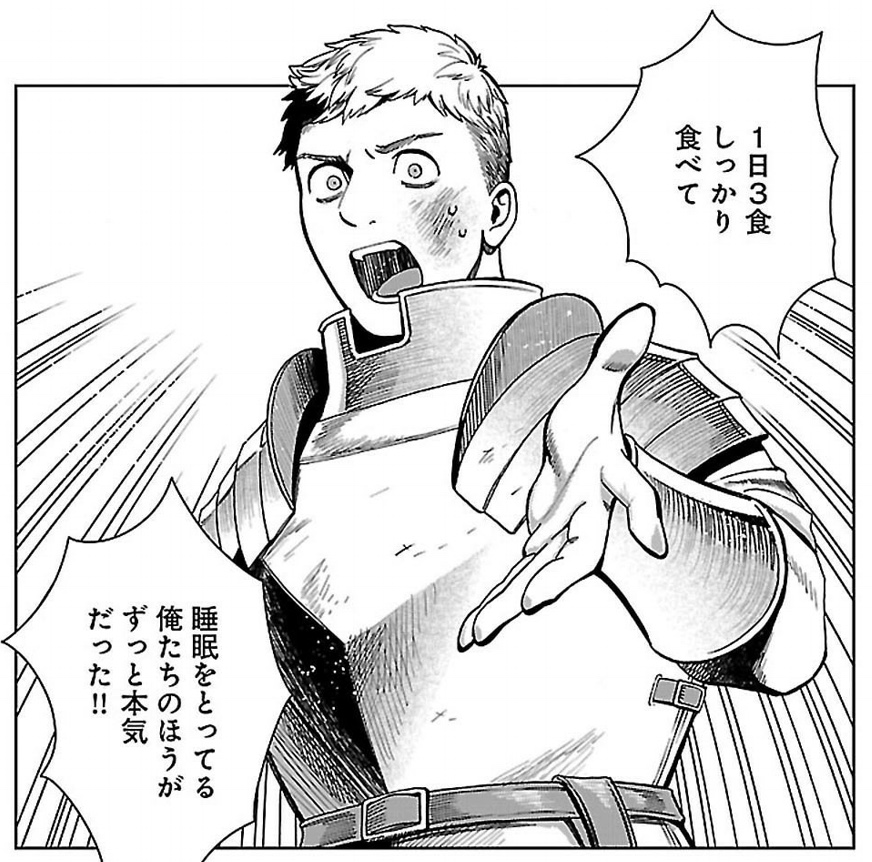

日記：羽生さんの1,400勝と『ダンジョン飯』6巻
公開日：
昨日は将棋の名人戦に釘付けだった。1日目からすごいことになってんなー、っていうか、自分が指してたら最初の角交換されたところで「しまった！ やっちまった」って感じだけど（素人向けなら「ここは飛車を2筋に戻す前に、強襲を受けないように穏便に指しましょうね」って感じだよね）、あれでもちゃんと形勢のバランスがずっと取れていて、最後まで難しいって……普通にすげーと思った。
個人的には終始、羽生さんがちょっと有利なのかなぁって思ってたのだけど、コンピューターでは名人がほんのちょっと有利で推移していたみたい。敗着が分かんない将棋だったけど、結局は時間の使い方と大局観（と“指運”）が勝利を分けたのかなぁ、って感じた。
それにしても、タイトル100期を目指す番勝負の最初を1400勝目で飾るとは……どれだけ“もってる”んだろうね、この人は！ 天彦さんも Twitter で一局を振り返ってくれて、とてもよかった。今期は羽生さんに勝ってほしいけど、ただのファッションスキーじゃないなって思う（← 失礼かよ！
木曜日は買ったばっかりの Apple Watch を付けて、父とお好み焼きを食べに行った。Apple Watch の話は、また機を改めて。
あとは……夜中に目が覚めたら、『ダンジョン飯』の6巻が Amazon から降ってきていたので読んだ。
")
- 作者: 九井諒子
- 出版社/メーカー: KADOKAWA / エンターブレイン
- 発売日: 2018/04/13
- メディア: Kindle版
- この商品を含むブログを見る
ライオスたちを中心に話を展開していると、読者がついうっかり忘れそうになる
- このダンジョンではカジュアルに死んでカジュアルに死ぬ
- 黒魔術は忌まわしいもの
っていう設定が、シュロー達、他のパーティーの参加であらためて浮き彫りになったかな。ライオスたちは今のところ死んでない（昔話で死んだっていう描写はある）ので、ついこの世界の死の重さを間違えそうになる。凄腕っぽいメンバーがハーピーにサクサク殺され＆サクサク蘇生されて初めて、ちゃんとこの世界の異常感がでてくるよね（ナマリのパーティーも死んでたけど、そこまであっさりじゃなかった）。あと、黒魔術の忌まわしさは……マルシルの立場のなさがちゃんと描かれてないと「仕方ないから仕方ない」で終わっちゃう話だった。「バレたらこの世界に居場所がなくなる」レベルなのを忘れそうになるのを、ちゃんと軌道修正した巻だった。
「飯」要素がだんだん減ってきて、世界設定の話に踏み込みつつあるのは、すっかりストーリーが分かんなくなった『進撃の巨人』の二の舞にならないか不安――ネタ切れならいい感じにサクッと終わらせてくれよ！――だけど、シェイプシフターの話も、夢魔の話（幼女マルシルかわいいｗ）も結構面白かったし、まだまだ大丈夫そう。
ちなみに、この巻のお気に入りのコマ。

「食事は暇なときにするものじゃない」とか言うセリフも好き。栄養ドリンク飲んで無理くり頑張るヒトより、長期的な体調管理も考えて頑張ってるヒトの方が「真面目」だし、評価したい――そう思う吉宗であった。